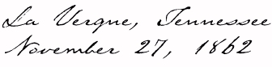
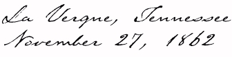

Report of Lt. Col. Peter Housum
November 27, 1862
Report of Col. Thomas E. Rose
Camp near Insane Asylum, November 29, 1862


Letter of Pvt. Henry M. Erisman to
brother from Camp near LeVergne, Nov. 18, 1862
"Reccollect it aint fighting but marching that'll fetch you...
take my
advise and stay where you are."